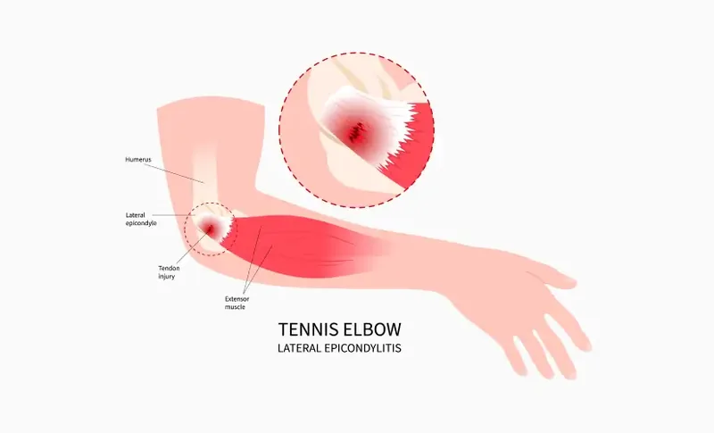
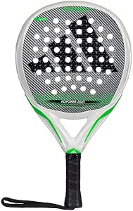

Tendinite et Padel : Quelle raquette choisir pour protéger son coude ?

Le « tennis elbow », ou épicondylalgie latérale, fait partie des douleurs du coude pouvant concerner les pratiquants de sports de raquette. Les frappes répétées, le poids de la raquette et les vibrations générées à chaque impact contre la balle ou la vitre finissent par enflammer les tendons de l'avant-bras et du coude. Si vous ressentez une douleur, le repos est primordial, mais le changement de matériel l'est tout autant pour éviter la rechute.
❌ L'erreur qui aggrave la douleur : Les raquettes en forme de Diamant
Jouer avec une raquette en forme de diamant, conçue pour la puissance, place le poids de la raquette vers la tête. Cet équilibre "en tête" crée un effet de levier énorme sur votre poignet et votre coude à chaque frappe. Si vous avez une douleur naissante, fuyez les raquettes d'attaque.
Publicité responsive intégrée
Les 3 critères obligatoires d'une raquette anti-tendinite
Pour soulager vos tendons, votre raquette doit devenir votre amortisseur. Voici les trois caractéristiques non-négociables à rechercher :
Schéma : L'importance d'une gomme souple (FOAM) pour absorber les vibrations avant qu'elles n'atteignent le bras.
1. Une gomme souple (FOAM ou EVA Soft)
C’est un critère de confort à examiner. Le noyau de votre raquette doit agir comme un gros coussin. Privilégiez une gomme très souple (souvent désignée par les termes FOAM, Polyéthylène, ou EVA Soft). Elle se déformera à l'impact et absorbera une grande partie des vibrations, contrairement à une gomme dure qui retransmet l'onde de choc directement dans votre bras.
2. Un poids allégé (moins de 360g)
Une raquette lourde demande beaucoup d'effort musculaire à votre avant-bras pour être freinée (lors d'une volée) ou accélérée. Si vous souffrez du coude, orientez-vous impérativement vers des modèles allégés, pesant entre 345g et 360g maximum. La mention "Light" ou "Women" est souvent un excellent indicateur d'un poids réduit.
3. Un équilibre bas (Poids en manche)
Une raquette de forme ronde et équilibrée vers le manche peut être plus maniable pour certains joueurs. Le confort et les sensations doivent être vérifiés à l’essai.
💡 L'astuce du coach : Les grips anti-vibrateurs
En plus de changer de raquette, pensez à installer un grip orientée conforts en silicone sous votre surgrip habituel (le plus connu étant le système Hesacore). Ses alvéoles peuvent modifier la prise en main et le confort ressenti. Leur effet varie selon le joueur et ne remplace pas une prise en charge adaptée en cas de douleur.
3 modèles confortables pour soulager votre bras
Voici une sélection de raquettes respectant strictement les 3 critères (Gomme souple, Poids léger, Forme ronde) :
Head Zephyr Ultralight
Avec seulement 340g sur la balance et la célèbre mousse Comfort Foam de Head, c'est l'une des raquettes les plus maniables et douces du marché.
Option légère mise en avant pour le confort de jeu

Adidas Adipower Light
Ce modèle constitue une option légère orientée contrôle et confort de jeu. Avec son poids plume (environ 345g), son équilibre parfaitement centré et sa mousse EVA Soft Energy, elle peut contribuer à atténuer certaines vibrations ressenties. Pensée pour la légèreté et le contrôle, elle peut offrir des sensations plus douces à certains joueurs, tout en gardant une excellente précision.
En résumé : Les 3 règles d'or contre la tendinite
Pour préserver votre coude sur le long terme, rappelez-vous de ces fondamentaux : jouez impérativement avec une raquette ronde, légère et dotée d'une mousse souple. Ne négligez jamais vos jours de repos en cas de douleur, et surtout, prenez toujours le temps de bien échauffer votre bras avant de frapper vos premières balles !